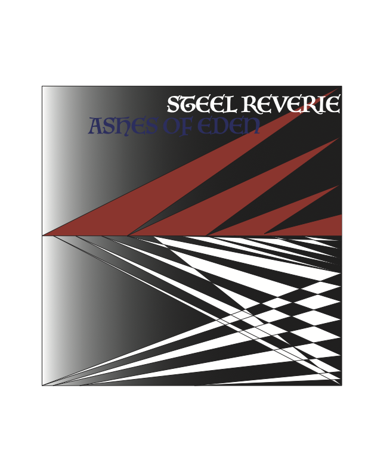

Steel Reverie
Home
Photos
Recordings
News
Private
Error 404: File not found 
Steel Reverie — Shattered Horizons - Studio Master
Recorded: 1977 · Status: APPROVED
Steel Reverie — Burn the Night Away - Live Bootleg
Recorded: Unknown · Status: UNVERIFIED